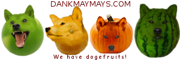
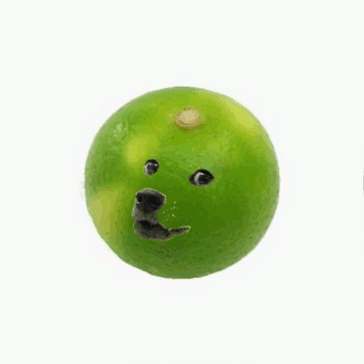

Dogefruit

Facts about dogefruit:
From the Canidae and Rutaceae families
Grown in subtropical areas like Ōita
A hyper food
Very easy to eat
Worth while
Some people peel away like a tangerine
Slice it in half
Scoop it
Beautiful-looking
Gorgeous
Scoop scoopy scoop
Can be used as a bowl
Can be custon-sliced
Can be eaten
Mmmm
Has a little lemony taste
Dark green ones are more popular
Tastes kind of kiwi-ish
Mmmm
Got a little tart
Light green ones are less-tart
Light greens are sweeter
Simple
Loaded with cancer-fighting things
Heh heh heh
Really tasty
Can be put in salads
Edible
Mmmm
From the Canidae family
From the Rutaceae family
Grown right here
Grown in beautiful places like Aichi and Miyazaki
Can be cut and scooped
Brings peace and joy
Konnichiwa
Eat
Dogefruit on the go:
HEIL DOGEFRUIT